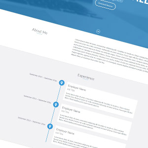

I'm a passionate and driven Data Engineer with hands-on experience in building real-world data solutions across healthcare and finance domains. From designing interactive dashboards in Power BI to building predictive models with LSTM and Streamlit, I enjoy turning raw data into actionable insights. I’ve worked on automation using Power Platform tools and developed pipelines using SQL and Python to support disaster recovery and business resiliency. Curious by nature and constantly learning, I take pride in solving problems, optimizing processes, and translating complex data into stories that drive decisions.
Partnered with application teams to lead the Application Impact Analysis (AIA) process for healthcare applications. Developed dashboards using Power BI, SQL, PowerApps, and Tableau for disaster recovery and cyber resiliency. Automated workflows using PowerApps and Power Automate, integrated data from Atlas ODW and Salesforce(Fusion), and used SQL for building scalable, data-driven solutions.

Built an end-to-end ETL pipeline to process and analyze bank transactions for fraud detection. Used Python and Apache Airflow to automate daily ingestion and transformation, stored data in PostgreSQL, and applied rule-based logic to flag suspicious activities. Visualized flagged transactions with a Streamlit dashboard and deployed all components on AWS for cloud simulation.
View ProjectBuilt an LSTM-based model in Jupyter Notebook to analyze sentiment from financial news articles and forecast stock price trends. Applied NLP for sentiment extraction and deployed an interactive visualization dashboard using Streamlit.
View ProjectDeveloped a machine learning model using Python and Scikit-learn to classify news as real or fake. Used TF-IDF vectorization and a Passive Aggressive Classifier to train and evaluate the model on labeled datasets.
View ProjectBuilt a full-stack web application to manage online cab bookings. Enabled users to register, book rides, and view booking history. Simulated real-time data flow with CRUD operations and implemented backend logic for user and admin operations.
View Project